2015年北京市中考数学试题 · 数学解答题 第26题 · 对应解析
26．（5分）（2015•北京）有这样一个问题：探究函数y=
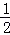
x2+的图象与性质．小东根据学习函数的经验，对函数y=x2+的图象与性质进行了探究．
下面是小东的探究过程，请补充完整：
（1）函数y=
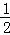
x2+的自变量x的取值范围是 x≠0 ；（2）下表是y与x的几组对应值．
x | … | ﹣3 | ﹣2 | ﹣1 | ﹣ | ﹣ | 1 | 2 | 3 | … | ||
y | … | 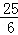 | ﹣ 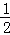 | ﹣ 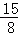 | ﹣ 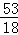 | 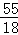 | 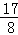 | m | … |
求m的值；
（3）如图，在平面直角坐标系xOy中，描出了以上表中各对对应值为坐标的点．根据描出的点，画出该函数的图象；
（4）进一步探究发现，该函数图象在第一象限内的最低点的坐标是（1，），结合函数的图象，写出该函数的其它性质（一条即可） 该函数没有最大值 ．
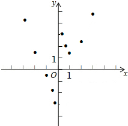
【解答】解：（1）x≠0，
（2）令x=3，
∴y=
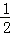
×32+=+=
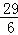
；∴m=；
（3）如图
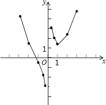
（4）该函数的其它性质：
①该函数没有最大值；
②该函数在x=0处断开；
③该函数没有最小值；
④该函数图象没有经过第四象限．
故答案为该函数没有最大值．